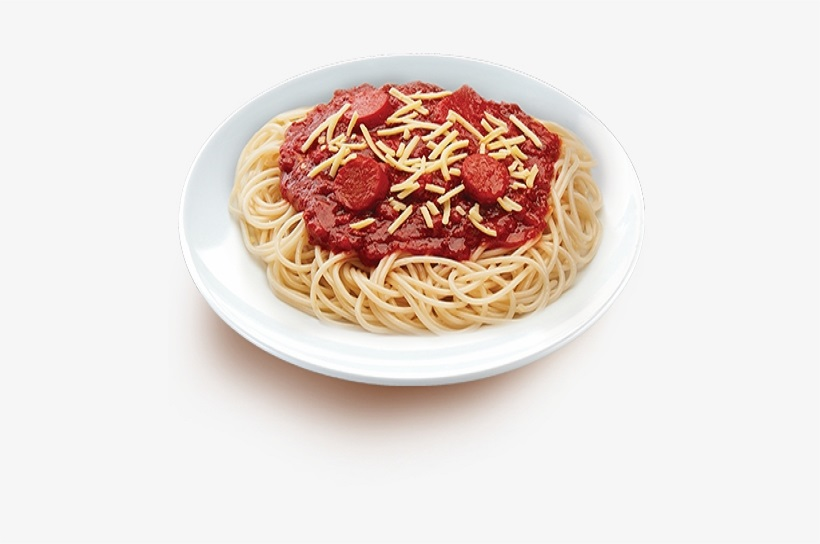

Bolognese

Description
Bolognese sauce is a meat-based sauce in Italian cuisine, typical of the city of Bologna. It is customarily used to dress tagliatelle al ragù and to prepare lasagne alla bolognese.
Ingridients of Bolognese:
- 1 tablespoon olive oil
- 1 onion, diced
- 2 carrots, diced, or more to taste
- 2 stalks celery, diced
- 8 cloves garlic, diced
- 1 pound lean ground turkey
- 1 pinch salt to taste
- 1 pinch garlic powder, or to taste
- 1 pinch onion powder, or to taste
- 1 pinch dried oregano, or to taste
- 1 pinch red pepper flakes, or to taste
- 1 ½ cups white wine
- 1 (28 ounce) can diced tomatoes
- 2 cups hot water, or more to taste
- 2 tablespoons ketchup, or more to taste
Steps to prepare it:
- Heat olive oil in a large pot over medium heat. Add onion, carrots, and celery; cook and stir until starting to brown, about 10 minutes. Stir in garlic; cook until fragrant, 1 to 2 minutes. Add turkey; season with salt, garlic powder, onion powder, oregano, and red pepper flakes. Cook and stir until turkey is starting to brown, 5 to 8 minutes.
- Pour white wine into the pot and scrape any browned bits off the bottom with a wooden spoon. Stir in tomatoes, hot water, and ketchup. Simmer until flavors combine, about 30 minutes.